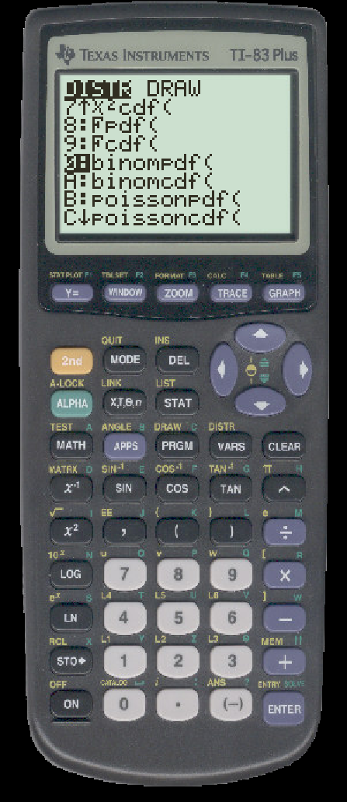
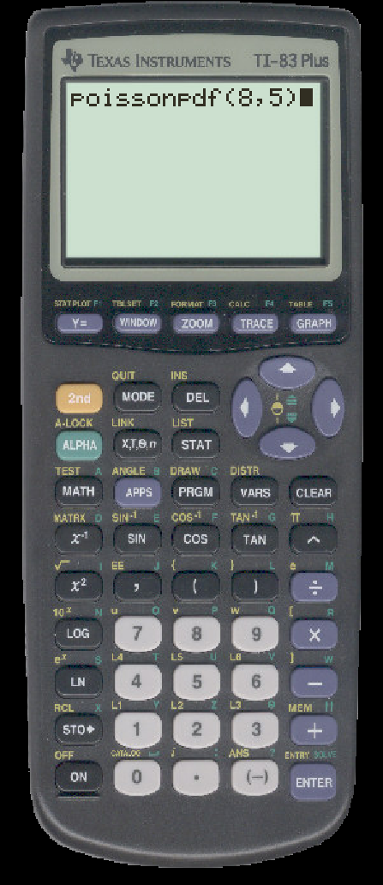
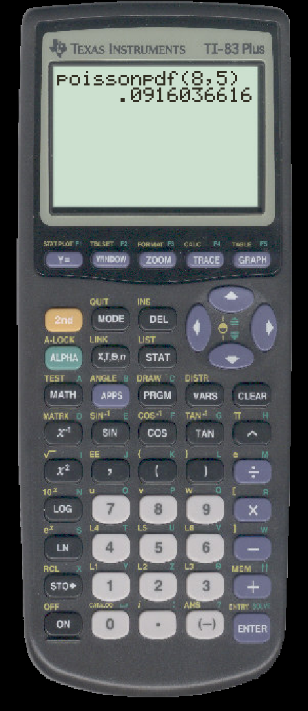
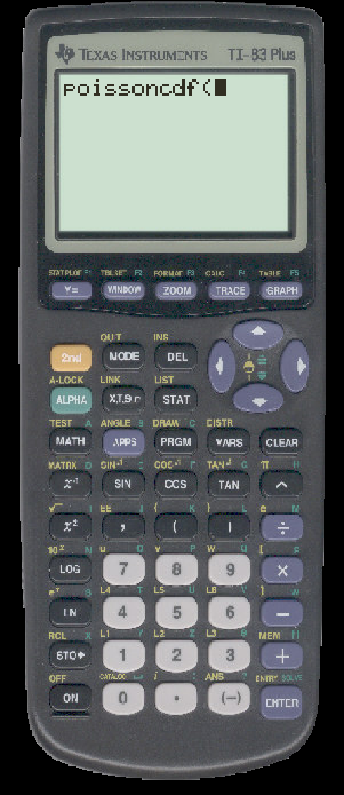
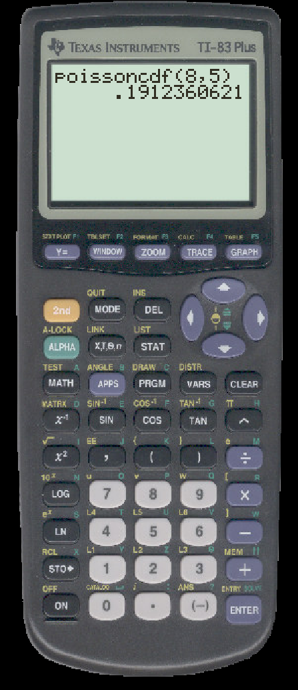

TO CALCULATE POISSON PROBABILITIES ON THE TI
Suppose that x is a random variable with a Poisson distribution with μ=8. We first calculate P(x=5).
-
First press 2ND then DISTR (the VARS button). Scroll to the Poisson options.

- Select ``poissonpdf('' and you will see
- Enter the arguments in the order μ, x

- Press ENTER and you will see

Next, we calculate P(x ≤ 5).
- First press 2ND then DISTR (the VARS button). Scroll down to select ``poissoncdf(''

- Enter the arguments in the order μ, x
- Press ENTER and you will see
